ホーム › 健康・からだ › 腰の痛み
整形外科医への取材記事｜2026年10月27日更新
毎晩の湿布は、
いつ、どうやめればいいのか。
貼る前に寝転んだ姉の、
14日間の朝。
毎晩の湿布を、いつ、どうやめればいいのか。答えは、いきなりやめる事ではありません。整形外科医が姉の手帳で確かめてから、外来で話している順番です。
湿布でしのぐ朝が何年も続くと、腰の奥の筋肉はやせていきます。湿布が1枚ないだけで、仕事を休む朝も来ます。同じ朝を迎えてほしくないので、最後まで読んでいただけたらと思います。
机の写真は、6年間、毎晩湿布を貼ってから眠っていた姉。その湿布を出していたのは、妹の内田医師でした。
やめ方の順番へ ›
この記事は、約12分で読めます
姉は、湿布を貼ってから台所の電気を消すのが、毎晩の決まりでした。6年間、1日も欠かしませんでした。
姉が怖がっていたのは、腰の痛みではありません。湿布が無いと、朝が始まらない自分でした。
取材協力｜内田 早苗 医師
内田 早苗 医師（56）
整形外科専門医。6年間、姉に湿布を出し続けていた事の重さを、実家に泊まった朝に知る。その後、針マットの作り手と寝る前の使い方を決め、湿布の減らし方を姉の手帳で確かめて、いまは外来で「やめる順番」を話している。
取材｜腰と暮らしの取材室 共有：X・LINE・リンク
市の健康講座でも、「湿布を増やす前に、寝る前の10分を変える」という話をしてきました。
湿布を増やすほど、朝がこわくなるのはなぜか
朝の腰の激痛に備えている人の多くは、「今夜は2枚にしよう」と湿布を足していきます。冷やす物が合わなければ、温める物に替える。それでも不安な夜は、痛み止めも飲む。
朝の激痛は、仕事で腰を使いすぎたせいだけではありません。湿布が、固まった筋肉に届いていないからです。
「湿布貼ったりして誤魔化し誤魔化し働いてる」
ガールズちゃんねる「立ち仕事」のトピの書き込み（原文ママ）
痛みの合図を弱めることと、腰の奥の筋肉を元に戻すことは、別の話です。
読む前に｜約12分、上から順にお読みください
答えだけ先に読むと、また湿布を1枚足して終わります。その先にあるのは、湿布が無いと起き上がれない朝が、何年も続く毎日です。順番に読んでください。
- なぜ、湿布を増やしても朝の激痛が止まらないのか
- 湿布が、腰の奥の筋肉に届かなかった理由
- 湿布をやめる順番と、姉の14日間の朝の記録
- 研究・値段・30日保証までの確かめ方
この記事の流れ｜途中を飛ばさず、上からお読みください
多くの人が、先に試す五つ
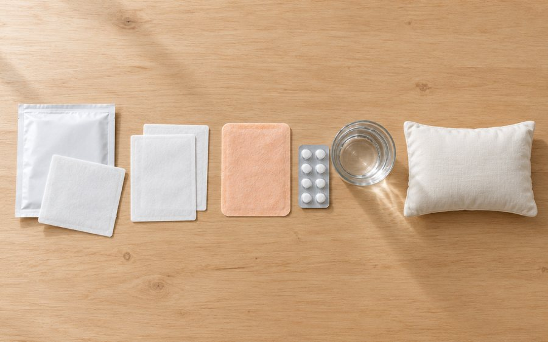
寝る前に湿布を貼る。枚数を2枚に増やす。温める湿布に替える。痛み止めを飲む。寝る時は、横向きで小さな枕を抱える。
どれも、始めた夜には「これで明日は大丈夫」と思える方法です。けれど朝にまた痛めば、その人はまた次の1枚を足します。
「就寝前にサロンパスを貼っておくと、起床時に痛みは感じません。」
Yahoo!知恵袋の質問（朝の腰痛の相談・原文ママ）
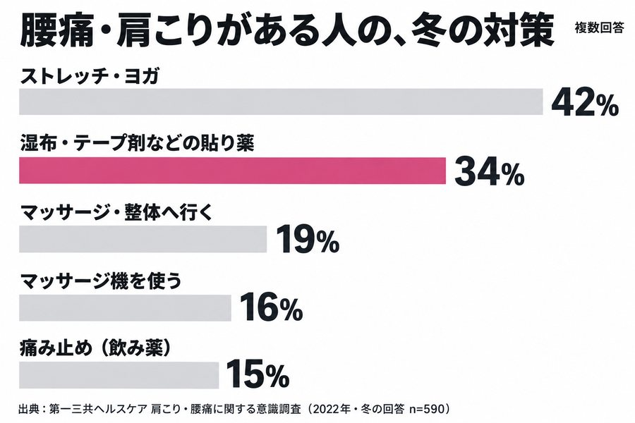
腰痛や肩こりのある人に冬の対策を聞いた調査では、ストレッチ・ヨガが42%、湿布などの貼り薬が34%でした。3人に1人が、貼る薬で冬の痛みをしのいでいます。
出典：第一三共ヘルスケア「肩こり・腰痛に関する意識調査」（2022年・冬の回答 590人・複数回答）。
姉が、何をしていたか
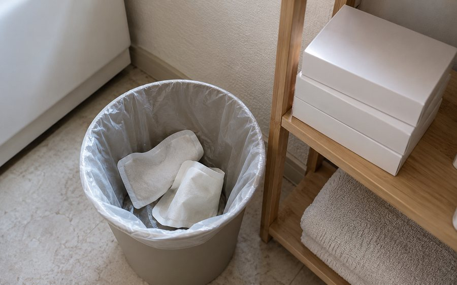
姉の和子さんが59歳になった春、内田医師は久しぶりに実家に泊まった。そこで初めて、湿布を貼って眠る姉の夜と、起きる朝を見たという。
妹が、泊まった夜と朝に見たこと
寝る前に、腰へ湿布を2枚。貼ってからでないと、横にならなかった。
妹が出した湿布を、薬局で3か月分ずつもらっていた。
背中側は自分で貼れず、鏡に背を向けて、手さぐりで貼っていた。
朝は横向きになり、手をついてから、ゆっくり体を起こしていた。
起きてすぐの数歩は、壁に手をついて歩いていた。
「長く貼っていると、効かなくなってきた気がする」と、こぼしていた。
職場の給食室では、朝いちばんの重い鍋を、若い人に頼むようになっていた。
朝、湿布をはがした跡を、指でさすってから着替えていた。
どれも、姉は妹に一言も言わなかった。
「姉が頼っていたのは、湿布じゃないんです。その湿布を出していたのは、私でした」
「ロキソニンテープを貼ってないと痛みが酷く歩くのも大変です。」
Yahoo!知恵袋の質問（湿布を使っている人・原文ママ）
内田医師は、整形外科の専門医だ。毎日、朝の腰の激痛を訴える人を診て、姉にも外来で「レントゲンは異常なし」と伝え、湿布を出してきた。それでも、実の姉の朝は知らなかった。
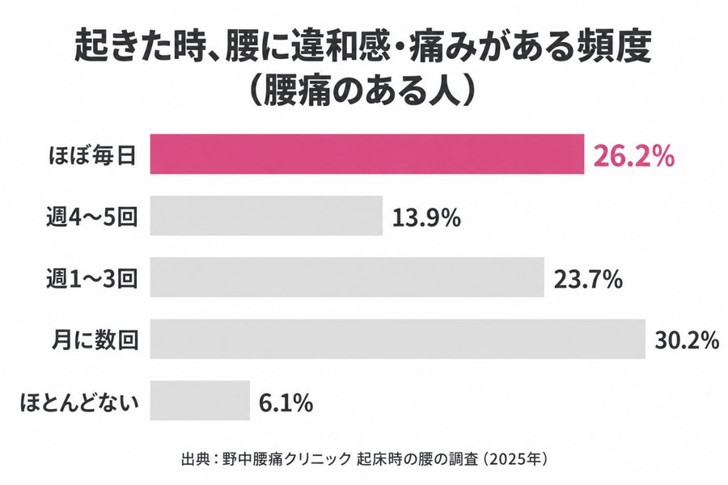
30〜40代の5万人の調査では、腰痛との付き合いは平均9.9年でした。別のクリニックの調査では、腰痛のある人のうち、起きた時に腰が痛むのが「ほぼ毎日」という人が26.2%いました。
出典：第一三共ヘルスケア「30代・40代の男女に聞く、肩こり・腰痛調査」（2016年・5万人）／野中腰痛クリニック 起床時の腰の調査（2025年）。
なぜ、湿布では朝の激痛が止まらないのか
姉の湿布の箱を見て、妹は気づいた。湿布の枚数の問題ではなかった。
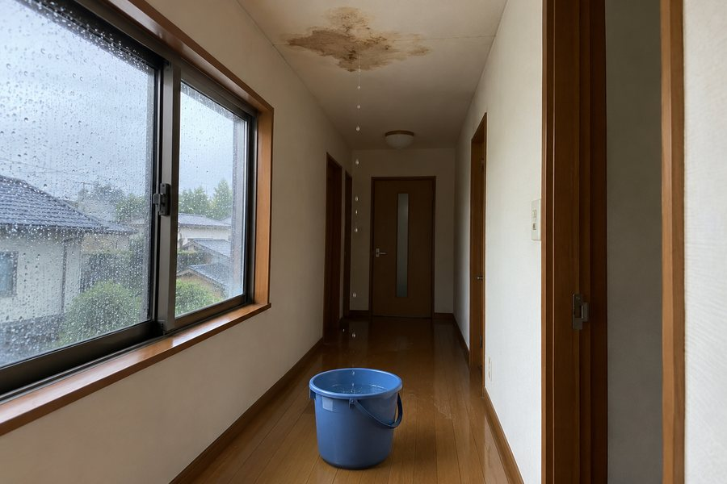
雨漏りの下に、バケツを置くところを思い浮かべてほしい。バケツがあれば、床はぬれない。けれど屋根の穴は、そのまま残る。雨が降るたびに、バケツはまた要る。
床がぬれないことと、屋根の穴がふさがることは、別の話です。
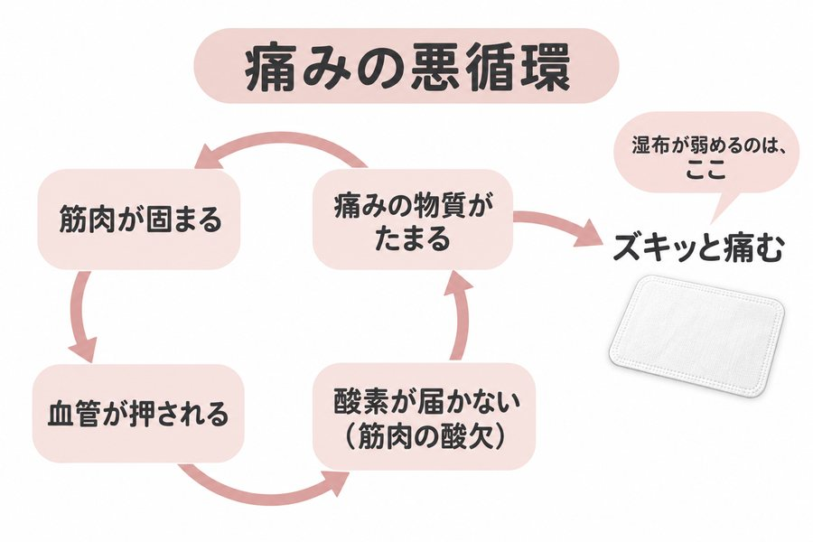
朝の激痛のもとは、寝ている間に固まった背骨わきの筋肉の「筋肉の酸欠」です。固まった筋肉が中の血管を押しつぶし、痛みの物質ブラジキニンがたまったままになります。湿布が弱めるのは、その痛みの合図です。楽になるから毎晩貼る。その間も、酸欠は止まっていません。
日本ペインクリニック学会の治療指針は、筋肉の固まりと血のめぐりの悪さが痛みを呼び、その痛みがまた筋肉を固める輪を「痛みの悪循環路」と呼んでいます。
2枚に増やしても、痛み止めを足しても、届かない所
次の1枚を貼る前に、ここだけは知ってください。
痛みを感じにくくする物が、朝の腰を元に戻してくれるとは限りません。
湿布を毎晩貼る
湿布は手軽で、貼った夜は楽になります。けれど、医療用の湿布の説明書には、こう書かれています。「消炎鎮痛剤による治療は対症療法であるので、症状に応じて薬物療法以外の療法も考慮すること」。作っている側が、痛みを抑える物だと書いています。
2枚に増やす・温める湿布に替える
枚数を増やしても、届くのは皮ふから薬がしみこむ所までです。長く続く痛みに、貼る・塗る痛み止めを使った39本の試験のまとめでは、薬の入っていない物と比べて「効いた」人を1人増やすのに、7〜10人に使う必要がありました。
「医師からは一枚までと言われてましたが、どうしても2箇所痛んだため貼ってしまいました。」
Yahoo!知恵袋の質問（湿布を2枚貼った人・原文ママ）
痛み止めを足す
痛み止めは、飲んで全身に回し、痛みの信号を止めます。痛みを抑える薬で、固まった筋肉に触らない点は、湿布と同じです。
「経験上、整形外科は毎回湿布と痛み止めを処方されるだけで無意味でした。」
Yahoo!知恵袋の質問（整形外科に通った人・原文ママ）
要るのは、固まった筋肉を、外から押して、放すこと。内田医師と姉がたどり着いた、そのための答え
- 広い面を、一度に押すこと
- 手を使わずに押すこと
- 毎晩、寝る前にできること
三つが、湿布を貼っていた寝る前の時間に、そろうこと。
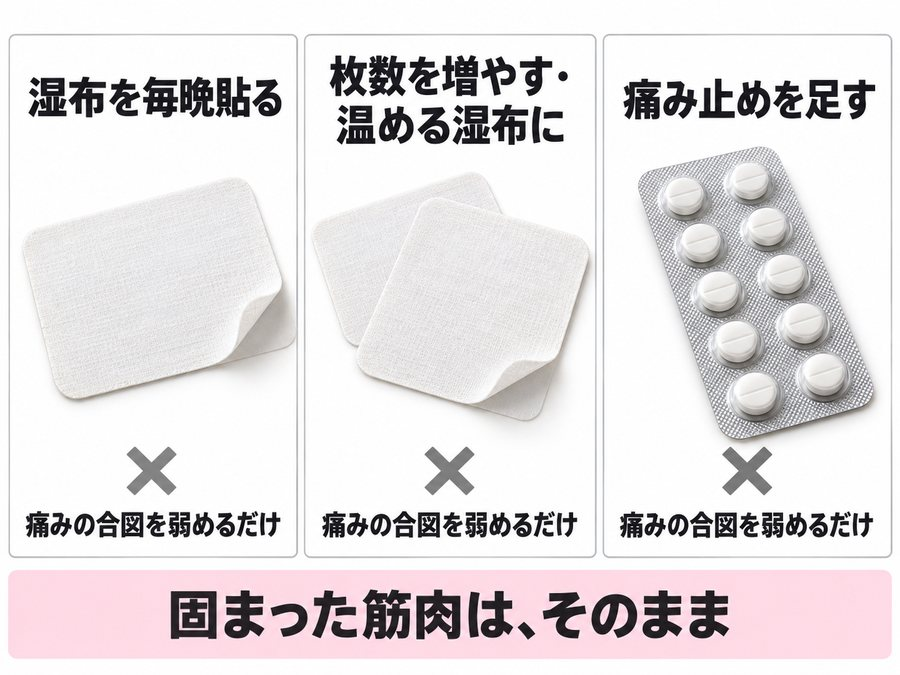
出典：モーラステープ20mg 添付文書「重要な基本的注意」（PMDA）／Derry ほか（2016）Cochrane Database Syst Rev（39本・10,631人。多くはひざや手の関節の痛み）。
このままでは、起こり得る未来
最初に減るのは、朝いちばんに、すっと立ち上がれる時間です。
次に減るのは、湿布を切らしてもいい日です。
最後に減るのは、「来年もこの仕事を続けよう」とあなたが思える自信です。
もし、いまここまで読んでいるなら、一度だけ想像してください。
あなたは湿布の残りを、毎晩数えるようになる。旅行のかばんには、着替えより先に湿布を入れる。朝は、横向きになってから時間をかけて起きる。
次に、あなたは朝の予定を、腰の具合で後ろにずらすようになる。「朝は弱くて」「その日は都合が悪くて」。本当の理由は、誰にも言わない。
その次に、酸欠のまま何年もたった奥の筋肉は、やせて、すき間に脂肪が入りこみます。脂肪に変わった筋肉は、湿布を何枚貼っても戻りません。
湿布の残りを数えて眠る毎日か。
数えなくていい毎日か。
「これは一生付き合っていかないと駄目なものですか？」
Yahoo!知恵袋の質問（湿布を毎日貼っている人・原文ママ）
その前に必要なのは、また別の湿布を足すことではありません。いま固まっているだけの筋肉なら、血が戻れば、まだゆるみます。
寝る前に使う物を選ぶなら、見るのは三つです
「よく効きそう」「安そう」だけで選ばないでください。朝の自分を考えるなら、見るのは三つです。
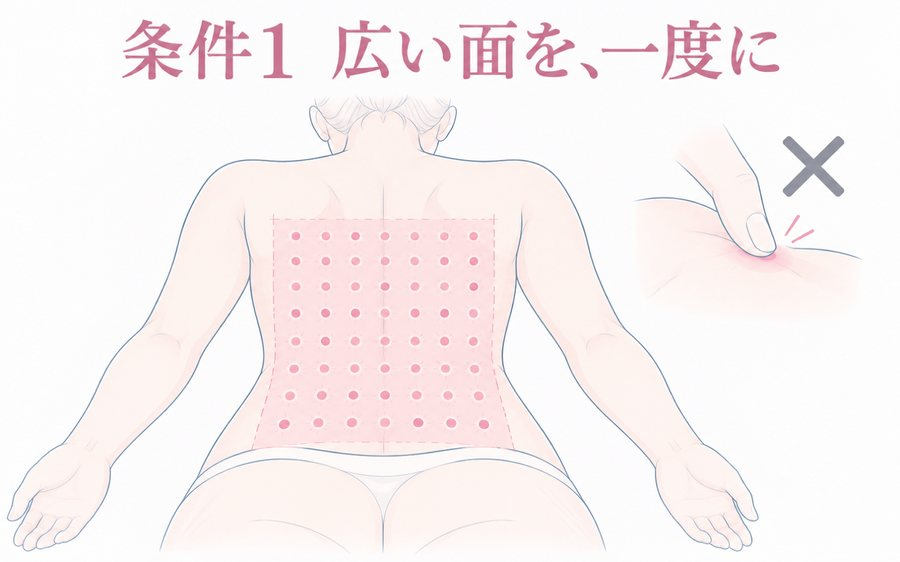
条件 1
広い面を、一度に
背骨わきの筋肉は、腰から背中まで、ひとつながりで固まります。一点だけを押す物では、残りが固まったままです。
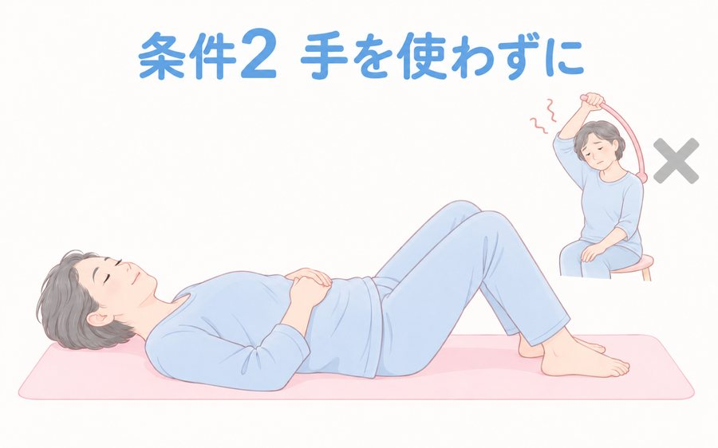
条件 2
手を使わずに
手で押す物は、手が疲れたら止まります。それに、背骨わきの奥には、自分の手が届きません。
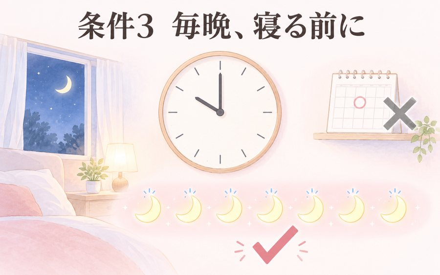
条件 3
毎晩、寝る前に
筋肉は、毎晩寝ている間に固まり直します。週に1回では、残りの6日分の固まりが、そのまま残ります。
針マットは、三つをこうして支えます
一つ目は、広い面を一度に押すこと。
針マット（ハリネル 自重指圧マット）は、表一面に、白い花の形の突起が並んだマットです。寝転ぶと、体の重さが数千本の突起に分かれて、腰から背中を一度に押します。
二つ目は、手を使わないこと。
押す力は、自分の体重です。人の指で押すのではなく、寝転んだ重さで押すので「自重指圧」と呼びます。手は、おなかの上に置いたままです。
三つ目は、毎晩続けられること。
電気も充電も使いません。床に敷いて、ひざを立てて、10分寝転ぶだけです。終わったら丸めて、セットに付く黒い袋にしまえます。
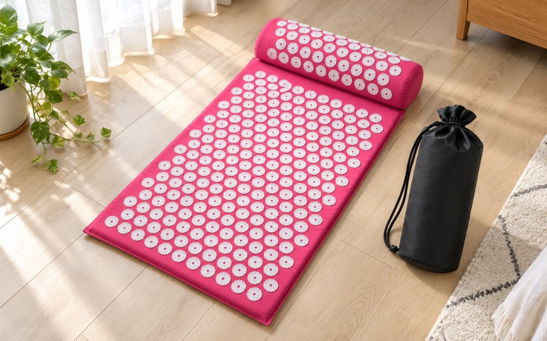
★★★★★ 4.6 2,184件の評価
海外の研究でも、同じことが分かっています
針の面に寝転ぶ事は、内田医師と姉だけが言っている事ではありません。海外の研究チームの試験でも、針の面に寝転ぶと、腰の痛みが下がることが分かっています。
14日で、腰の痛みが下がった
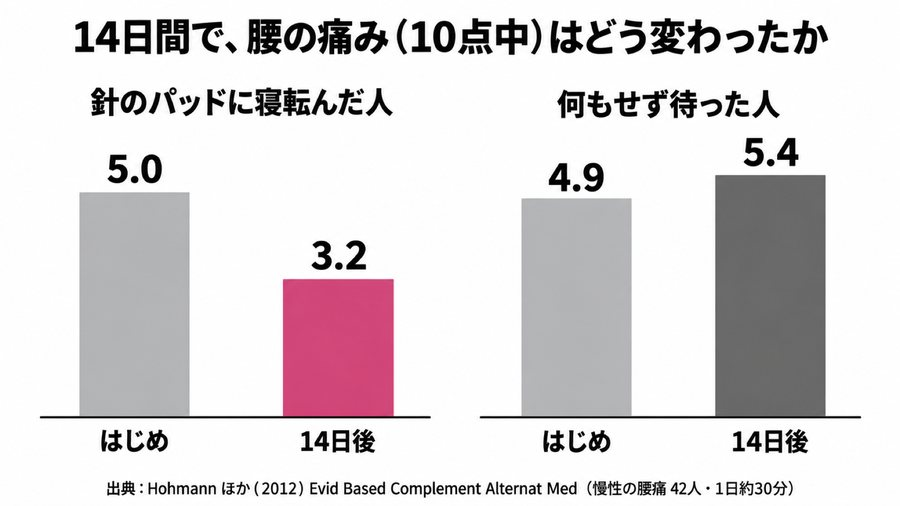
2012年に、ドイツの研究チームが、補完医療の学術誌に載せた試験です。慢性の腰痛がある42人を2つに分け、片方だけが、針の並んだパッドに1日約30分、14日間寝転びました。
寝転んだ人の腰の痛みは、10点中5.0から3.2へ下がった。
何もせず待った人の痛みは、4.9から5.4へ、少し強くなっていた。
つまり、何もしないで様子を見た14日では、腰の痛みは下がらなかった、ということです。
図1｜14日間の腰の痛み（0〜10点）。出典：Hohmann ほか（2012）Evid Based Complement Alternat Med 2012:753583（ドイツの研究チーム・慢性の腰痛42人）。
いちばん痛いのは、乗ってから30秒まで
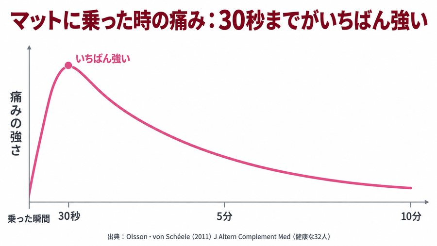
2011年にスウェーデンの研究チームが、健康な32人で確かめた試験では、針のマットに寝た時の痛みは、30秒以内にいちばん強くなり、そこから下がっていきました。
慢性腰痛の91人が使った別の試験でも、使った直後に腰の痛みが下がりました。一方で、91人のうち8人は、痛すぎて続けられませんでした。
図2｜針のマットの上の痛みの変わり方。出典：Olsson・von Schéele（2011）J Altern Complement Med 17(1)（健康な32人）／Saha ほか（2016）Eur J Integr Med（慢性腰痛91人）。
押された所から、温かくなる
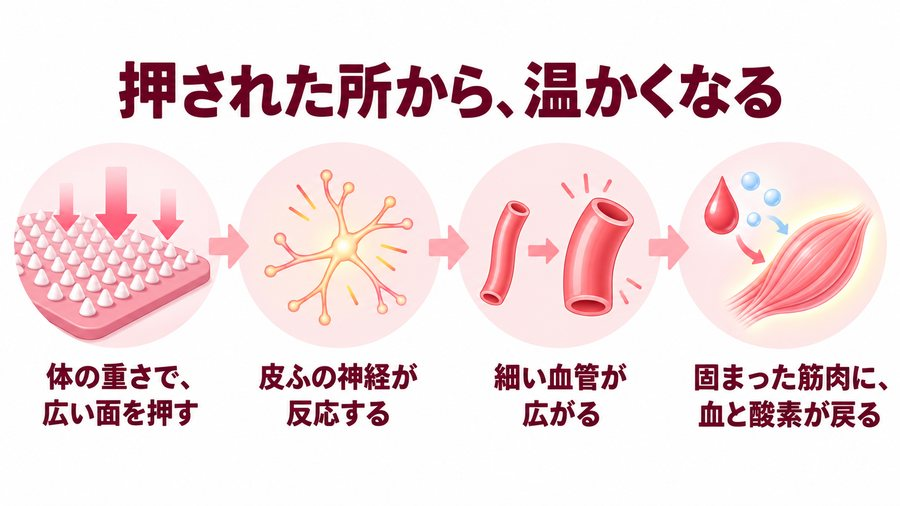
皮ふを押すと、そこの神経が反応して、細い血管が広がります。押された腰から背中が、赤く、じんわり温かくなるのはこのためです。
広がった血管から、血が下の固まった筋肉まで流れこみ、酸素が届きます。32人の試験でも、背中の血のめぐりが増えるしるしが見られました。
研究で下がったのは、腰の痛みの点数でした。
見るのは貼る枚数ではなく、朝の数字です。
なぜ、今まで誰も教えてくれなかったのか
理由は、だれでも確かめられる所にあります。湿布の箱の説明書は、痛みと炎症を抑える薬だと書きます。固まった筋肉の話は、どこにも出てきません。
もう1つは、レントゲンです。固まった筋肉は、レントゲンに写りません。学会の指針も、筋肉から来る痛みは「画像診断や病理検査，血液検査で異常所見はない」と書いています。だから「異常なし」と言われ、湿布と痛み止めが出て、話が終わります。
姉の手元に、湿布しか無かったのは、このためでした。
姉の湿布を、妹が止めた理由
姉が湿布を貼り始めたころ、妹が外来で出せる物は2つしか無かった。湿布か、痛み止めか。寝ている間に固まる筋肉を、毎晩ゆるめる物は、処方の棚に無かった。
「姉には6年、遅れました。でも、湿布の数を毎晩数えている人を、これ以上増やしたくない。だから、寝る前の10分の使い方を、自分で確かめようと思いました」
内田医師自身は、道具の作り手ではない。だから針マットの作り手と、寝る前の使い方を一緒に決め、湿布の減らし方を姉の手帳で確かめた。いまは、その順番を外来で話している。
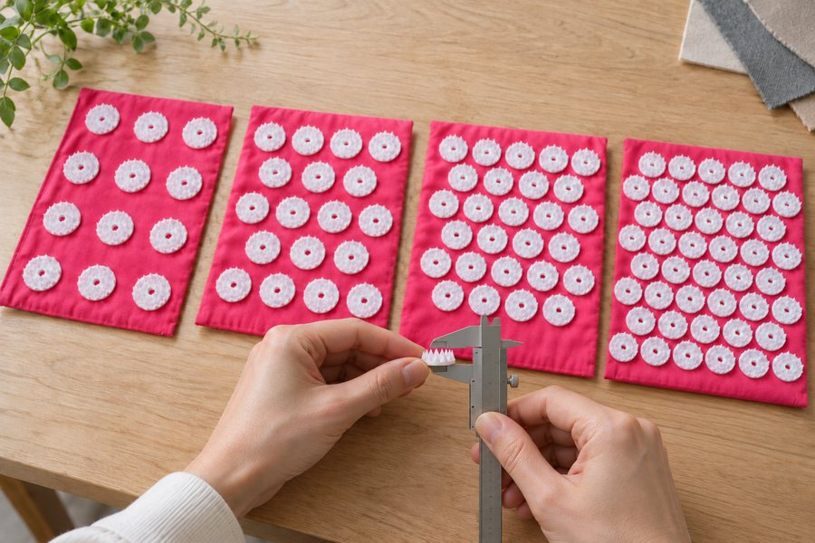
「突起の間かくを1mm変えるだけで、乗った時の痛さがまるで違いました。痛すぎれば続かないし、ゆるければ腰の奥まで押せない。毎晩10分を続けられる並びに決めるまで、試作は9回、1年2か月かかりました」
── ハリネルの作り手（内田医師と組む前から、試作を進めていた）。円盤は1枚ずつ手で布に留めるため、1日に作れるのは40枚ほどです。
年のせいにしないで、
来年も、自分の足で職場に立つ。
朝、自分の力で起き上がる ›
公式ページへ・30日間返金保証・送料無料
使い始めた朝に、確かめること
1回寝転んだだけでは、本人にも違いは分かりにくいものです。
使い始めた日から、朝、体を起こした時の腰の痛みを、0から10の数字で手帳に書いてください。いちばん痛かった日を10、痛みの無い朝を0にします。湿布をいつ減らすかは、この数字で決めます。
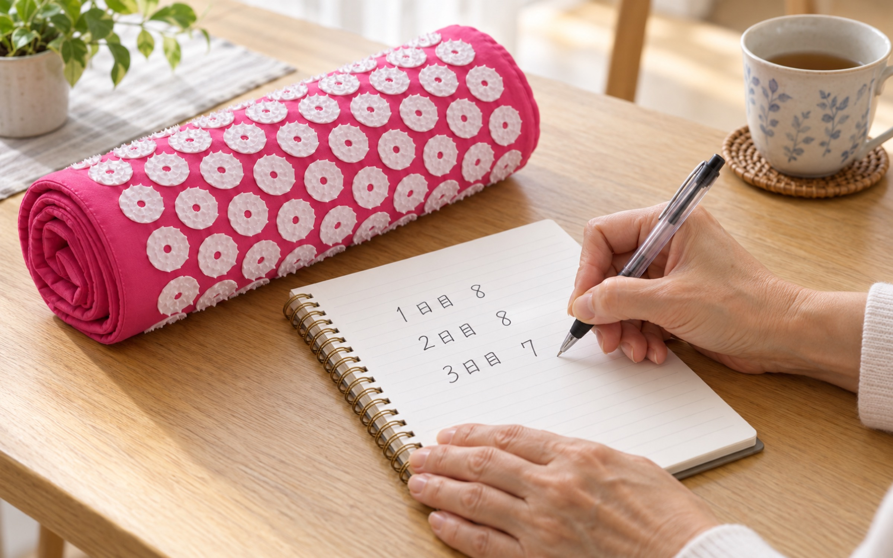
取材の終わりに、内田医師は自分からこう付け足した。「私はこの使い方を一緒に決めた側なので、中立ではありません。私の話を信じなくてかまいません。手帳の数字だけを見て、決めてください」
毎晩の湿布は、いつ、どうやめればいいのか
答えは、いきなりやめないことです。内田医師が姉の手帳で確かめてから、外来で話している順番です。湿布を貼ったまま、マットを先に足すことから始まります。
1〜7日目
寝る前に、針マットに10分寝転びます（最初の夜は薄い服の上から5分）。湿布は、いつもどおり、その後に貼ります。朝、体を起こした時の痛みを0〜10で手帳に書きます。
8日目の朝
手帳の数字を、1〜3日目の合計と、5〜7日目の合計で比べます。
合計で3つ以上下がった時：その夜から、湿布を1枚だけにします。痛みの強い側に貼ります。1枚の夜が3日続いて、朝の数字が上がらなければ、貼らない夜を1晩ずつ続けてのばします。貼らない夜が7晩続いて、朝の数字が上がらなければ、湿布はやめ終えたと考えてよい目安です。1枚の夜や貼らない夜の次の朝に数字が上がったら、その夜は前の枚数に戻し、3日続けてから、もう一度減らします。
下がりが2つまでの時（変わらない時）：湿布は貼ったまま、もう7日続けます。マットの時間を15分にのばします。14日目の朝に、12〜14日目の合計を1〜3日目の合計ともう一度比べます。14日目に合計で3つ以上下がっていれば、上の「1枚にする」順番へ進みます。14日目も下がりが2つまでの時は、30日の返金保証の間に返すか、手帳を持って整形外科で相談してください。
8日目なら5〜7日目の合計、14日目なら12〜14日目の合計が、1〜3日目の合計より上がった時・しびれや足に響く痛みが出た時：マットを休み、整形外科で診てもらってください。手帳を持って行き、「寝る前に指圧マットを使っていたら、朝の数字が上がった」と見せてください。
医者に出されている湿布を使っている方へ。減らす前に、次の受診で手帳を見せて、「寝る前に指圧マットを使っています。湿布を1枚に減らしてもいいですか」と聞いてください。医療用の湿布の説明書にも、「症状に応じて薬物療法以外の療法も考慮すること」と書かれています。足す事は、説明書の言うとおりです。
出典：モーラステープ20mg 添付文書「重要な基本的注意」（PMDA）。順番は内田医師が姉の手帳で確かめた目安で、研究で決めた日数ではありません。
湿布をやめた人の朝は、何日目にどう変わったのか
姉の和子さんの手帳を、1日目から14日目まで、そのまま並べます。朝の数字は、その日の朝、体を起こした時の腰の痛み（0〜10）。前の夜にした事の結果です。
| 日 | 朝の数字 | その日の夜にしたこと | 手帳のメモ |
|---|
| 1日目 | 8 | マット5分（服の上から）→湿布2枚 | 乗った瞬間、声が出た。30秒で少し引いた |
|---|
| 2日目 | 8 | マット5分→湿布2枚 | 5分は長い。でも背中が赤くなって温かい |
|---|
| 3日目 | 7 | マット7分→湿布2枚 | 起きる時、壁に手をつく回数が減った気がする |
|---|
| 4日目 | 7 | マット10分→湿布2枚 | 10分いけた。5分をこえるとポカポカ |
|---|
| 5日目 | 7 | マット10分→湿布2枚 | 寝つきが早い |
|---|
| 6日目 | 6 | マット10分（素肌）→湿布2枚 | 素肌は痛い。でも慣れた |
|---|
| 7日目 | 6 | マット10分→湿布2枚 | 朝、横向きにならずに起きられた |
|---|
| 8日目 | 6 | マット10分→湿布1枚（右だけ） | 合計が23から19へ、4つ下がったので1枚にした |
|---|
| 9日目 | 6 | マット10分→湿布1枚 | 左は貼らなくても、朝の数字は同じ |
|---|
| 10日目 | 5 | マット10分→湿布1枚 | 重い鍋を自分で火にかけた |
|---|
| 11日目 | 5 | マット10分→湿布なし | 初めて貼らない夜。朝、少しこわかった |
|---|
| 12日目 | 6 | マット10分→湿布1枚 | 朝の数字が1つ上がった。決めたとおり、今夜は1枚にもどす |
|---|
| 13日目 | 5 | マット10分→湿布1枚 | 1枚にもどして2日目 |
|---|
| 14日目 | 4 | マット10分→湿布1枚 | 壁に手をつかずに台所まで歩いた。1枚にもどして3日目。明日の夜、また貼らない夜を試す |
|---|
14日目の朝の数字は4。湿布は、毎晩2枚から1枚になりました。手帳はその先も続きます。15日目から貼らない夜を1晩ずつ続けてのばし、21日目から27日目まで、貼らない夜が7晩続きました。28日目の朝の数字は3。和子さんは、この日で湿布をやめました。12日目のように、朝の数字が上がって1枚にもどした夜もあります。もどしてもいい、と決めていた事が、続けられた理由でした。
和子さんの記録は1人の例です。研究で14日に下がったのは、腰の痛みの点数の平均です（上の図1）。
湿布がいらなくなったら、戻したいこと
編集部は内田医師に、「患者さんは、何が戻ったら嬉しいと言いますか」と聞きました。返ってきたのは、旅行のような大きな話ではありませんでした。
内田医師への取材は、2時間におよびました。
朝いちばんの重い鍋を、自分で火にかけられること。急に誘われた日に、湿布の残りを数えずに「行く」と言えること。孫が走ってきた時に、腰をかばわずに受け止められること。
── 内田医師が、患者さんから聞いた言葉
実際に、外来で湿布を2枚から1枚に減らした61歳の女性は、2週間たった朝、重い鍋を自分で火にかけられたと話したそうです。
患者さんが戻したいのは、痛みの無い一生ではなく、朝いちばんの10分を、自分のために使える毎日でした。
値段の見方を、変えます
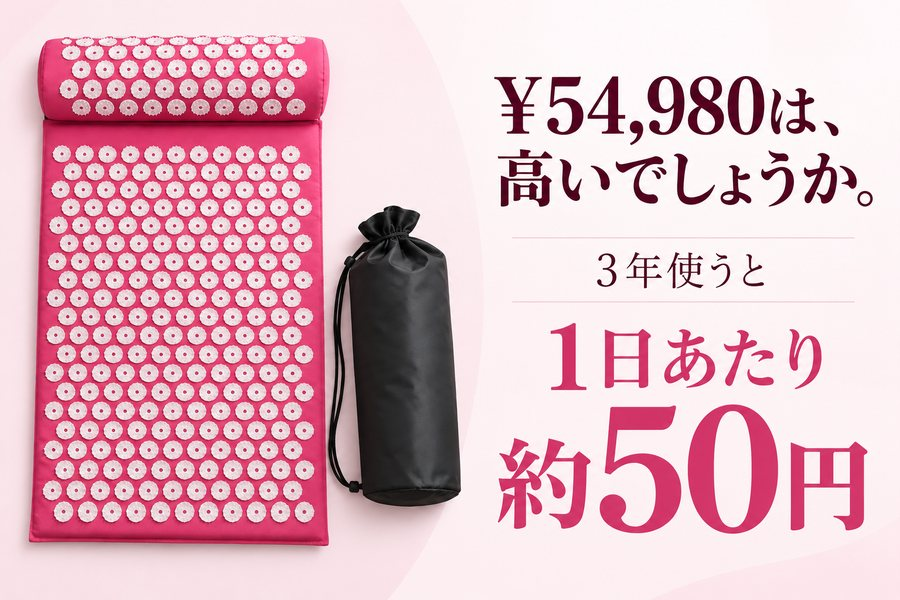
腰の対処を3年続けるより、安く済みます
ハリネルの公式ページを見ると、いまセット（マット・枕・袋）が、別々に買った合計61,780円より6,800円安い54,980円になっていました。
セットを3年使うと、1日あたり約50円です。湿布の数を毎晩数える夜を、1日50円で手放せます。
まず、今の腰の対策に払っている額と比べてみてください。
- 湿布・痛み止めなどの対処：腰痛の対処に、月に約1,800円。3年続けると約64,800円です
- 整体：1回6,500円ほど。月に2回通うと、1年で約15万6千円です
- 湿布を2枚に増やす：枚数が増えるほど、毎月の額も増えます。届く所は皮ふまでのままです
湿布で朝をしのいでいる方へ
3年で払う額を、
並べてみました
湿布・痛み止めなどの対処（月 約1,800円）
ずっと払い続ける
6か月約10,800円
1年約21,600円
2年約43,200円
3年約64,800円
針マット セット（3年使う）
払うのは最初だけ
最初に54,980円
1年追加 0円
2年追加 0円
3年追加 0円
3年で浮くお金9,820円
知っていましたかマットだけからセット（マット＋枕＋袋）にすると、足した枕と袋は 19,090円
足した枕と袋は、枕だけを別に買う時より6,800円安くなります。
セットは、別々に買うより6,800円お得
セット（マット＋枕＋袋）セット ¥61,780 → ¥54,980（税込）
黒い収納袋つき・送料無料・30日間の返金保証
セットを3年使うと、1日あたり約50円です。
![1日あたり約50円]()
セットで54,980円。湿布などの対処を3年続ける額より安く、毎晩同じ1枚を使えます。
首を枕に乗せて背中をまっすぐ預けられるので、セットがいちばん選ばれています。カードを押すと、公式ページに進みます。
※ 腰痛の対処の月の額は、30〜40代5万人の調査（第一三共ヘルスケア 2016年）の約1,800円で計算した目安。湿布だけの額でも、50代の額でもありません
湿布は、貼るたびに無くなります。
腰痛の対処には、月に約1,800円かかっているという調査があります。3年続ければ、約64,800円が出ていきます。
針マットはセットで54,980円。3年使えば、1日あたり約50円です。貼って捨てるのではなく、毎晩同じ1枚を使うので、出ていくのは最初の一度だけです。
※ 腰痛の対処の月の額は、30〜40代5万人の調査（第一三共ヘルスケア 2016年）の値で、50代の額ではありません。湿布だけの額でもありません。
選ぶなら、枕と袋のついたセットがおすすめです。
首を枕に乗せると、腰から背中まで、まっすぐマットに預けられます。枕は、腰のくぼみの下に置いても使えます。
- 枕：首を乗せて、背中をまっすぐ預けるため。腰の下に置けば、くぼみまで押せます。
- 黒い袋：丸めて入れれば、旅行先や実家にも持って行けます。
寝る前も、旅先の夜も。
袋から出して、床に敷くだけ。
枕と袋まで
セット（マット・枕・袋）
3年で1日あたり 約50円
寝る前の10分を、毎晩
腰を預けて眠る夜へ ›
いちばん選ばれています
セット
マット・枕・袋がそろう
セットなら、黒い袋つき
湿布を数えない夜へ ›
30日間返金保証・全国送料無料・注文から7〜10日でお届け
RISK FREE
30日間 返金保証
1回寝転んだだけで決めなくて大丈夫です。
14日間、朝の数字を書いてから決めてください。
- ✓ 使ったあとでも返金できます。開けて寝転んだあとでも受け付けます。
- ✓ 30日以内なら、注文番号を書いたメール1通で手続きが始まります。
- ✓ 箱の外側に、中身が分かる表示はありません。
- ✓ 突起が強すぎると感じたら、薄い服の上から5分で始められます。
2〜3週間後を、想像してみてください
最初の夜は、乗ってからの30秒がいちばん痛く、声が出ます。5分をこえると、腰がじんわり温かくなります。
1週間たつと、寝る前の10分が、湿布を貼るより先に体が覚える習慣になります。手帳の数字を見て、片方の湿布を外す夜が来ます。
2〜3週間後の朝。横向きにならずに体を起こし、壁に手をつかずに台所まで歩く。湿布の残りを数えなくなった事に、あとで気づきます。
使った人の声
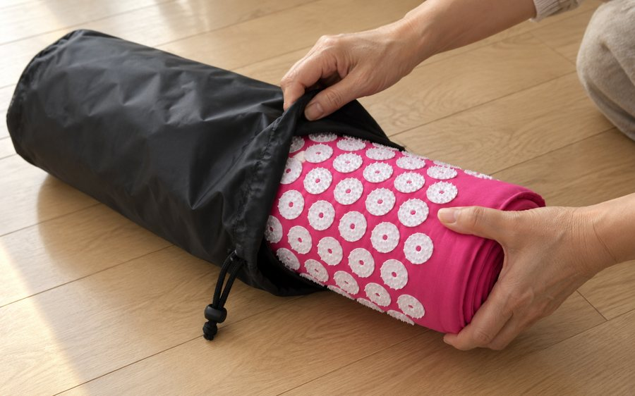
佐毎晩2枚貼っていた方公式ページに寄せられた声★★★★★
「湿布を買い足す日が、来なくなりました」
毎晩2枚貼らないと、朝に起き上がれませんでした。いまは寝る前に10分寝転んで、湿布を貼らない夜のほうが多くなりました。
佐藤さん・56歳（介護の仕事）
田痛いのが苦手だった方公式ページに寄せられた声★★★★★
「最初の30秒が、いちばんのがまんでした」
乗った瞬間は声が出ました。3日目には、5分をこえて腰がじんわり温かくなるのを、待つようになりました。
田村さん・52歳
森立ち仕事の方公式ページに寄せられた声★★★★★
「朝の数字が、手帳の上で下がっていきました」
朝いちばんの痛みは、はじめ7でした。14日目の朝は4。湿布は、寝る前の1枚だけになりました。
森さん・58歳（スーパーの品出し）
最後に、三つだけ覚えてください
確かめるのは、この三つ
- 腰から背中まで、広い面を一度に押しているか
- 自分の手を使わずに、押しているか
- 寝る前に、毎晩続けているか
この三つがそろえば、湿布はいきなりやめなくても、1枚ずつ減らせます。
朝の数字が下がれば、
湿布の数は、自分で決められます。
湿布を1枚ずつ減らす夜へ ›
公式ページへ・30日間返金保証・送料無料
よくある質問
最初は、どのくらい痛いですか？
乗ってから30秒までがいちばん痛く、そのあと引いていきます。初めての方は、薄い服の上から5分で始めてください。慣れたら素肌で10分です。
湿布と一緒に使ってもいいですか？
使えます。マットを先に使い、湿布はその後に貼ってください。湿布を貼った上から寝転ぶと、はがれたり、肌がこすれたりします。
話題のマットは、宣伝だけではありませんか？
研究は、まだ大きくありません。42人・32人・91人の試験です。だからこの記事では、手帳の数字で自分で確かめる方法を先に書きました。
大きさは？
マットは約68×42cmで、大人の背中から腰がのる大きさです。枕は約38cmの筒形です。丸めると、セットに付く黒い袋1つに収まります。
洗えますか？
表の布は、しぼった布でふいてください。洗濯機には入れないでください。セットの方は、黒い袋に入れて、湿気の少ない所にしまってください。
いつ届きますか？
注文から7〜10日でお届けします。箱の外側に、中身が分かる表示はありません。
妹が、最後に話したこと
「姉は、腰の痛みを恥ずかしがっていたのではありません。湿布が無いと朝が始まらない自分を、妹にも職場の人にも見せたくなかったのだと思います」と、内田医師は話す。
だから、毎晩黙って2枚を貼り、そのかわりに、朝の予定を少しずつ手放しました。
いま同じように湿布を数えている人がいるなら、見てほしいのは貼る枚数ではありません。広い面を、手を使わずに、毎晩押せているか。この三つがそろえば、湿布の数は、手帳の数字で決めていい。
「湿布を急にやめさせたかったのではありません。自分で減らせる順番を、姉に渡したかった。それだけでした」
寝る前に10分、
朝の数字を1つ。
湿布の数は、
自分の手帳で決めていい。
次の朝から、自分で起き上がる ›30日間、いつもの夜で試せます
公式ページで選べます。いま出しているのは、最初に作った分だけ。次に作る分が届くのは年明けです。
※ 本商品は指圧マットです。医薬品・医療機器ではありません。強い痛み・しびれ・足に響く痛みがある方は、先に整形外科で診てもらってください。
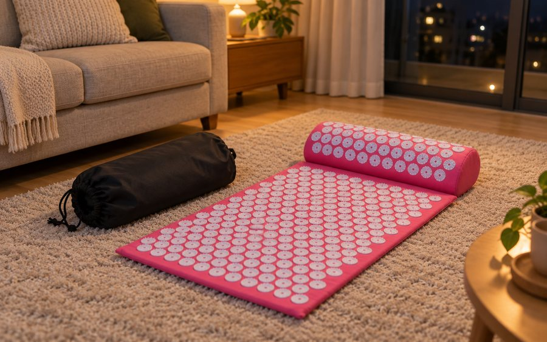
次の夜から、数字を書く ›公式ページへ・30日保証・送料無料
使った人の声
中医者に出された湿布を使っている方公式ページに届いた声購入後の投稿
購入者の声「手帳を見せたら、先生と1枚に減らす話になりました」
先生に出された湿布を、自分で減らすのは悪い気がしていました。
1週間分の朝の数字を見せて「寝る前に指圧マットを使っている」と話したら、1枚にしてみましょうと言われました。
中村さん・58歳
小痛いのが苦手な方公式ページに届いた声購入後の投稿
購入者の声「Tシャツの上からなら、5分で始められました」
針の上に寝るなんて、痛くて続かないと思っていました。
最初はTシャツの上から5分。1週間で、素肌の10分に慣れました。いまは5分をこえて温かくなるのが待ち遠しいです。
小林さん・51歳
山父に贈った方公式ページに届いた声購入後の投稿
購入者の声「父が、テレビの前で毎晩寝転んでいます」
父は新しい物を嫌がるので、贈っても押し入れ行きだと思っていました。
「寝る前に10分だけ」と言って渡したら、毎晩テレビの前で寝転んでいます。電話で朝の数字を教えてくれるようになりました。
山口さん・49歳（お父さま77歳）
購入前によくある質問
マットだけと、セットのどちらがいいですか？
セットです。枕に首を乗せると背中をまっすぐ預けられ、枕を腰の下に置けばくぼみまで押せます。別々に買うより6,800円安くなります。
腰のほかにも使えますか？
使えます。背中と肩は、そのまま寝転ぶだけです。首は枕を首の下に置きます。腰がいちばん痛い方は、まず腰から始めてください。
合わなかったら？
30日間の返金保証があります。使ったあとでも、30日以内に注文番号を書いたメールを1通送るだけです。
ここまで読んでくださった方に、1つだけ。
ハリネルの公式ページでは、いま初回生産分のご案内として、セット（マット＋枕＋袋）が別々に買った合計61,780円のところ54,980円になっています。
湿布などの対処を3年続けるより、約9,820円浮く計算です。
試すなら、30日の返金保証があるうちに、ハリネルの公式ページで選ぶのが損が少ないと思います。
このまま閉じれば、明日の夜も、湿布の残りを数えてから眠る毎日が続きます。替えるなら1日約50円で、30日間の返金保証があります。
腰と暮らしの取材室 編集部
30日間の返金保証・送料無料。注文から7〜10日で届きます。